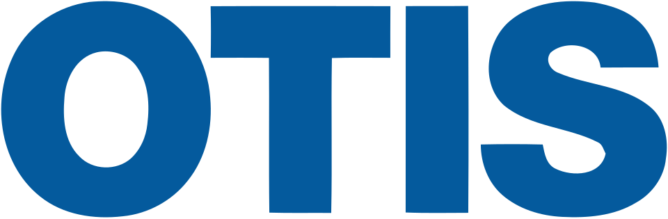

오티스 엘리베이터 Otis Worldwide Corporation
오티스 엘리베이터(Otis Worldwide Corporation)는 엘리베이터와 에스컬레이터를 비롯한 승강설비를 개발·제조하고 유지보수하는 미국 회사이다.
최종 업데이트

오티스 엘리베이터는 어떤 브랜드인가
이 회사는 엘리베이터와 에스컬레이터를 포함한 수직 운송 시스템을 개발하고 제조하며 설치 후 유지보수도 수행한다. 본문은 수직 운송 시스템 분야에서 세계 최대의 제조업체로 설명한다.
전 세계에서 설치한 엘리베이터 180만 대와 에스컬레이터 11만 5천 대 이상이 운용되며, 엘리베이터와 에스컬레이터 150만 대를 유지보수한다. 초기 안전 호이스트부터 전동식·기어리스·더블데크·리니어 엘리베이터까지 여러 승강 기술을 개발했다.
대한민국에서는 한반도 최초의 승강기 설치 이후 현지 기업 인수와 합병을 거쳐 사업을 운영한다.
오티스 엘리베이터는 어떻게 시작되고 성장했나
엘리샤 오티스는 1852년 화물용 승강기 제작을 계기로 로프가 끊어져도 추락을 막는 비상정지장치 브레이크를 개발했다. 그는 1853년 용커스에 승강기 전문 제작 회사를 설립하고 엘리베이터 상표를 등록했다.
1854년 뉴욕 세계박람회에서 승강기 로프를 직접 절단하는 공개 실험으로 안전장치의 작동을 입증했다. 회사는 1857년 뉴욕 브로드웨이의 E.
호그웃 빌딩에 세계 최초의 승객용 승강기를 설치했으며, 이후 두 아들 찰스와 노턴이 사업을 계승했다. 1867년 오티스 브라더스 컴퍼니로 재설립한 뒤 1873년까지 미국과 유럽 등에 누적 2,000대 이상의 승강기를 공급했다.
오티스 엘리베이터의 브랜드 아이덴티티는 무엇인가
로프 절단 시 추락을 막는 안전장치에서 출발해 승강설비의 개발·제조·설치와 대규모 유지보수를 함께 수행하는 점이 구분점이다.
오티스 엘리베이터의 대표 제품과 서비스는 무엇인가
핵심 사업은 승객용·화물용 엘리베이터와 에스컬레이터의 개발, 제조, 설치와 유지보수이다. 회사는 수압식과 전동식 승강기, 기어리스 타입, 더블데크 엘리베이터, 리니어 모터 구동 엘리베이터를 개발했다.
비상정지장치 브레이크와 조속기, 전자동 착상장치, 전자동 제어반과 푸시 버튼 등 안전성과 운행 제어를 위한 기술도 다룬다. 고층 건물용 고속 승강기와 한 개의 승강로에서 두 대가 수직으로 연결되어 움직이는 더블데크 방식도 공급했다.
오티스 엘리베이터는 지금 어떤 상태인가
위키데이터는 미국 파밍턴을 본사 소재지로 기록한다. 회사는 1976년 유나이티드 테크놀로지스에 인수되어 전액 출자 자회사로 전환했으며, 2018년 해당 회사에서 독립했다.
2023년 이후 러시아 법인과 사업장을 Meteor 사에 매각하고 철수했으며, 벨라루스에서는 시그마 엘리베이터의 현지 총판 계약과 선적을 중단했다.
오티스 엘리베이터 로고는 어떻게 변해왔나
자주 묻는 질문
오티스 엘리베이터는 어느 나라 브랜드인가요?
오티스 엘리베이터는 미국의 에너지·산업재 브랜드입니다.
오티스 엘리베이터는 언제 설립되었나요?
오티스 엘리베이터는 1853년 설립되었습니다.
오티스 엘리베이터의 브랜드 아이덴티티는 무엇인가요?
로프 절단 시 추락을 막는 안전장치에서 출발해 승강설비의 개발·제조·설치와 대규모 유지보수를 함께 수행하는 점이 구분점이다.
오티스 엘리베이터의 대표 제품은 무엇인가요?
핵심 사업은 승객용·화물용 엘리베이터와 에스컬레이터의 개발, 제조, 설치와 유지보수이다.
오티스 엘리베이터는 현재 어떤 상태인가요?
위키데이터는 미국 파밍턴을 본사 소재지로 기록한다.
오티스 엘리베이터의 창업자는 누구인가요?
오티스 엘리베이터의 창업자는 엘리샤 오티스입니다(위키데이터 기준).
오티스 엘리베이터의 본사는 어디에 있나요?
오티스 엘리베이터의 본사는 파밍턴에 있습니다(위키데이터 기준).
출처와 검증
오티스 엘리베이터 관련 참고: 공식 웹사이트 · 위키데이터 Q1134069 · 한국어 위키백과 · 영어 위키백과. 브랜드명은 한글과 원어를 함께 표기하되 데이터에 없는 표기는 만들지 않습니다. 기원 국가·설립연도는 검수된 정의문에서 확인된 값을 우선하고, 없을 때만 공식 웹사이트 URL이 일치하는 위키데이터 개체의 값을 씁니다. 위키데이터 값은 2026-09-12 기준입니다.